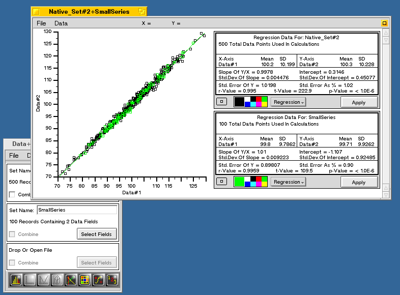

DataPlus
DataPlus
DataPlus
DataPlus Screenshot
Below is a screenshot taken from DataPlus, showing the DataPlus Data Manager Console, partly hidden by the output from the Linear Regression Analysis Tool. Here, two data sets are plotted and their correlation statistics are shown.
See the DataPlus Documentation/Tutorial HERE to get a better idea of what DataPlus does.
